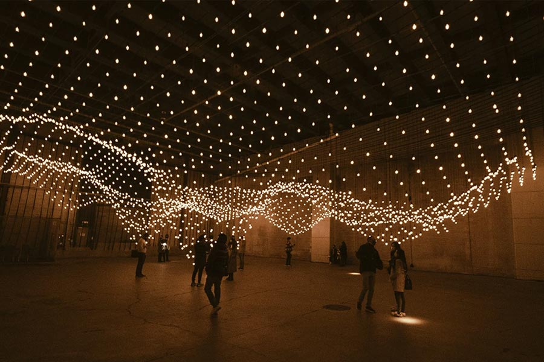

Algunos de los proyectos que definen la estética del artista:
- Pulse Room
- Vectorial Elevation
- 33 Questions per Minute
- Body Movies
- Interactividad
- Arte en espacio público
Algunos de los proyectos que definen la estética del artista:

Una instalación donde cientos de bombillas se sincronizan con el pulso cardíaco de los visitantes, creando una visualización colectiva de la vida biométrica.

Esta pieza forma parte de exposiciones más amplias centradas en la relación entre el cuerpo humano, la tecnología y el sonido, como la muestra "Presencia Inestable".

La obra explora conceptos de biométrica, vinculando el cuerpo privado con el público a través de la respiración compartida, e incluye advertencias sobre riesgos de asfixia y contagio debido a su naturaleza de circuito cerrado.

Cuando el espectador se mueve frente a ella o interactúa con la pantalla, las letras entran en "turbulencia", revelando fragmentos aleatorios de la novela.
En la obra de Rafael Lozano-Hemmer, el espectador ocupa un rol central. Las piezas están diseñadas para activarse únicamente a través de la participación, lo que transforma la experiencia artística en un proceso compartido.
Esta participación redefine la relación tradicional entre obra y público. La interacción no es un complemento, sino el núcleo de la propuesta, generando una conexión directa entre el cuerpo, la tecnología y el entorno.
El uso de tecnología en su trabajo no es neutral, sino que se vincula con una mirada crítica sobre temas contemporáneos como la vigilancia masiva y el control de datos.
A través de estas propuestas, invita a reflexionar sobre cómo las tecnologías afectan la vida cotidiana. La interacción se convierte en una herramienta para visibilizar estas tensiones y cuestionar su impacto en la sociedad.